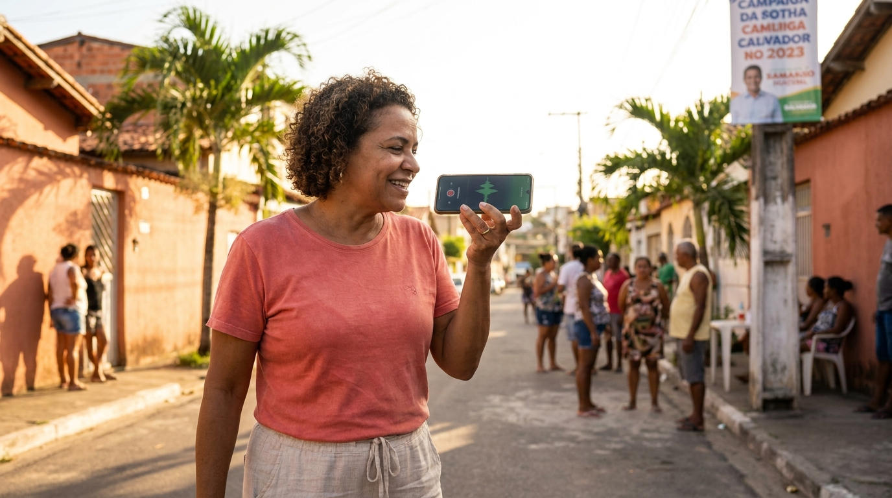
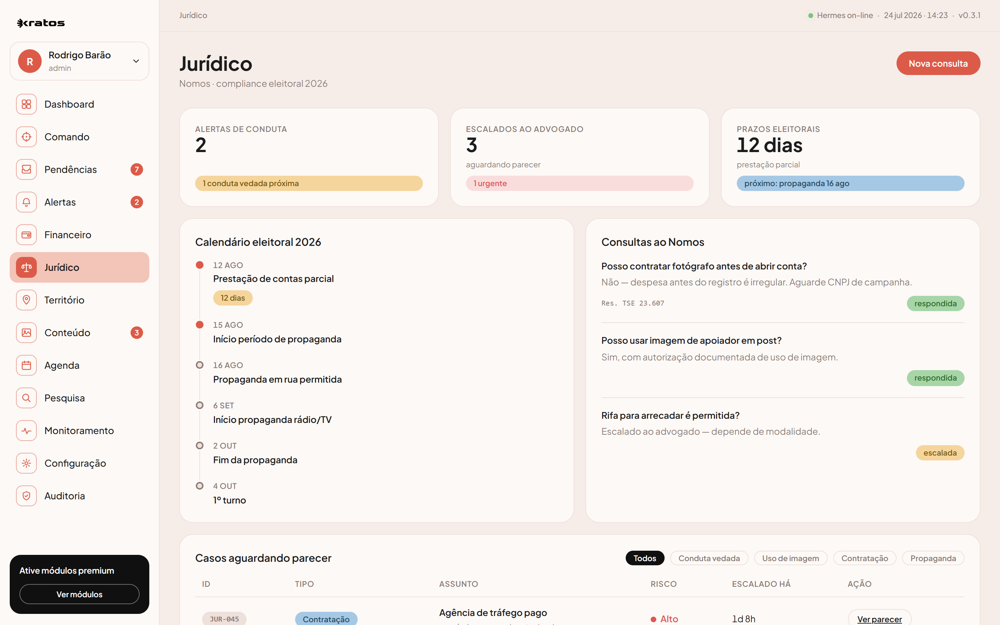
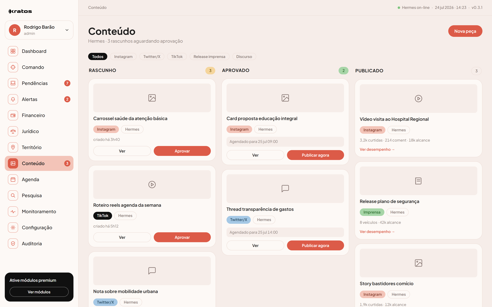
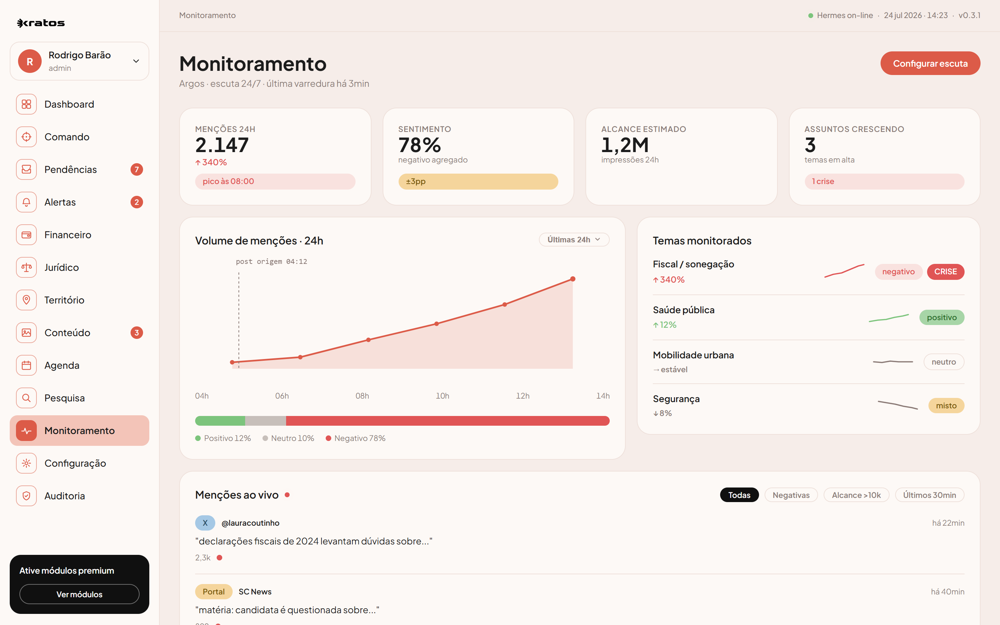
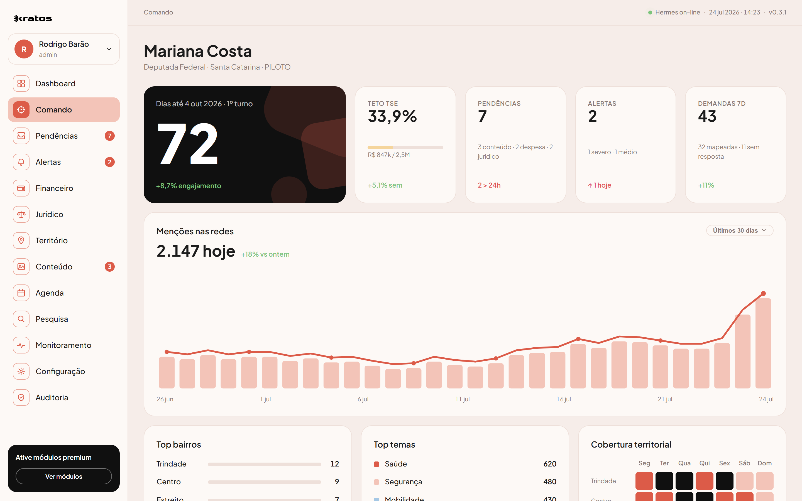
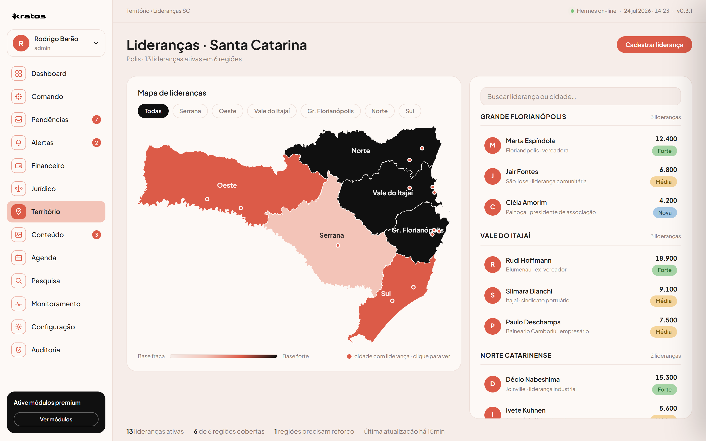
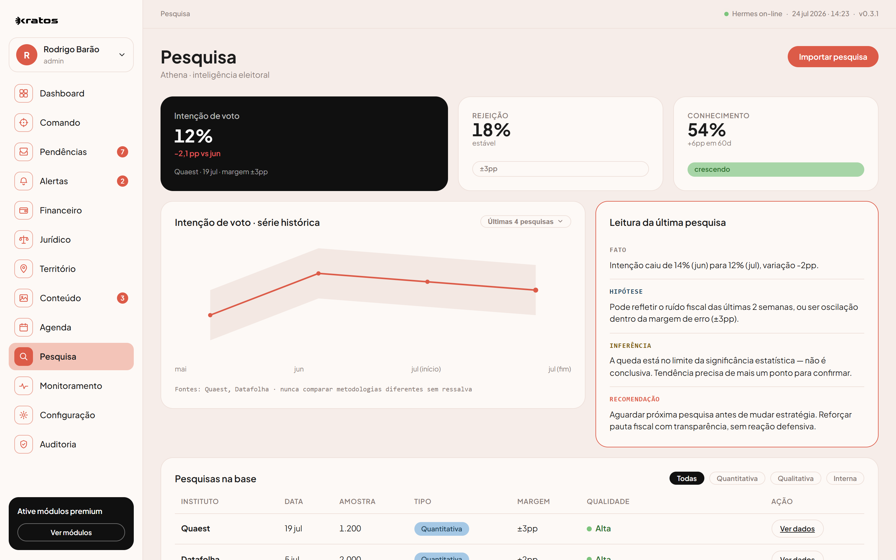
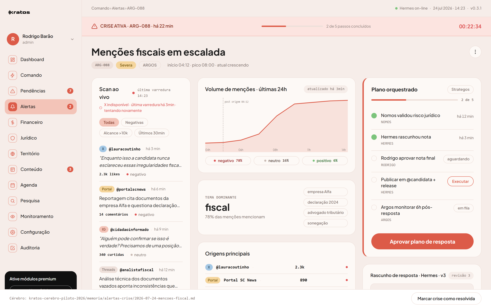

O cérebro da sua campanha.
Toda informação que entra na campanha vira decisão, tarefa e ação — sozinha. Uma inteligência que trabalha por você 24 horas por dia.
Você tem tudo na cabeça. E é exatamente esse o problema.
A demanda daquele bairro ficou num áudio perdido no grupo. A nota do fornecedor sumiu. Ninguém sabe ao certo quanto já foi gasto. E enquanto você apaga incêndio, o adversário anda.
E se nada mais se perdesse?
Imagine cada áudio, cada foto, cada mensagem da sua equipe virando informação organizada. Imagine abrir o celular e ver a campanha inteira numa tela só. Imagine saber o que o povo fala antes do seu adversário.
Sua equipe já sabe usar o Kratos. Ela usa WhatsApp.
Ninguém preenche planilha. Ninguém aprende programa. O coordenador manda um áudio, uma foto, uma mensagem — no WhatsApp ou no Telegram, como já faz o dia todo. O Kratos entende, organiza e guarda.

Um áudio de 15 segundos vira 4 ações.
A foto de uma nota vira sua prestação de contas.
Tesoureiro, coordenador, fornecedor — qualquer um fotografa a nota no grupo e tudo cai no mesmo lugar, organizado sozinho. O Kratos lê os dados direto na SEFAZ (oficial, não adivinhação por foto), arquiva por fornecedor e atualiza seu teto do TSE na hora.
A resposta jurídica antes de você errar.
"Posso fazer isso?" O Kratos consulta as regras do TSE e responde na hora. Dúvida simples, resolve na hora. Risco sério, ele encaminha pro advogado com a fonte da regra em cima. Nunca decide sozinho.


Uma agência de marketing dentro da campanha. 24 horas.
Post, story, discurso — e também imagem, vídeo e voz — sempre na sua narrativa, sem contradizer o que você já disse. É como ter uma agência inteira de plantão, dia e noite. Nada é publicado sem a sua aprovação.
Todo grupo de WhatsApp lido. Sem você ler nenhum.
São dezenas de grupos, centenas de mensagens por dia — ninguém consegue ler tudo. O Kratos lê. Escuta os grupos, o Instagram, o X, o TikTok e a imprensa, sem parar, e mede a temperatura de cada assunto.

A campanha inteira numa tela só.

Todas as suas lideranças num CRM que pensa.
Cada liderança de cada cidade e região no mapa do estado, com WhatsApp integrado. Você alinha a comunicação, envia material e acompanha a timeline do que cada uma prometeu — e do que entregou.


Números que decidem. Sem achismo, sem invenção.
O Kratos lê as pesquisas separando o que é fato, o que é hipótese e o que é recomendação. Compara cenários no tempo, sempre com a fonte e a margem de erro. E te avisa quando a pesquisa é fraca demais pra confiar.
A crise não te pega de surpresa. Nunca mais.
No momento em que um ataque começa a se espalhar, o Kratos detecta — antes de crescer. Junta as provas, acha a origem e monta o plano de resposta. Você entra na sala de guerra e decide.

Não são sete ferramentas soltas. É um cérebro só.
Cada agente sabe o que o outro sabe. O financeiro conversa com o jurídico, o território com a comunicação, o monitoramento com a estratégia. Uma informação entra num canto e atravessa a campanha inteira — coordenada por uma inteligência central que nunca dorme.

Cada parte desse cérebro tem um nome.
Você acorda sabendo exatamente o que fazer.
O Kratos trabalha enquanto você dorme. Quando você abre os olhos, a campanha já está organizada esperando por você.
Nada acontece sem a sua palavra final.
A campanha começa em 16 de agosto. Quem se organiza antes, larga na frente.
Todo candidato vai ligar o motor no mesmo dia. A diferença vai estar em quem já tem o cérebro da campanha rodando — e quem ainda está montando planilha.